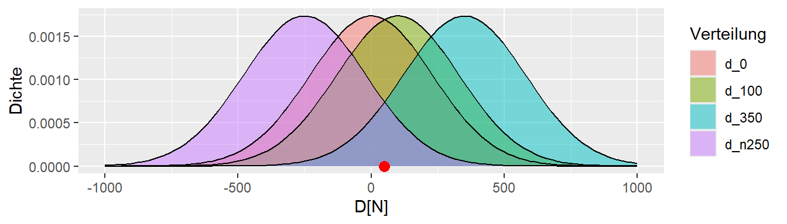
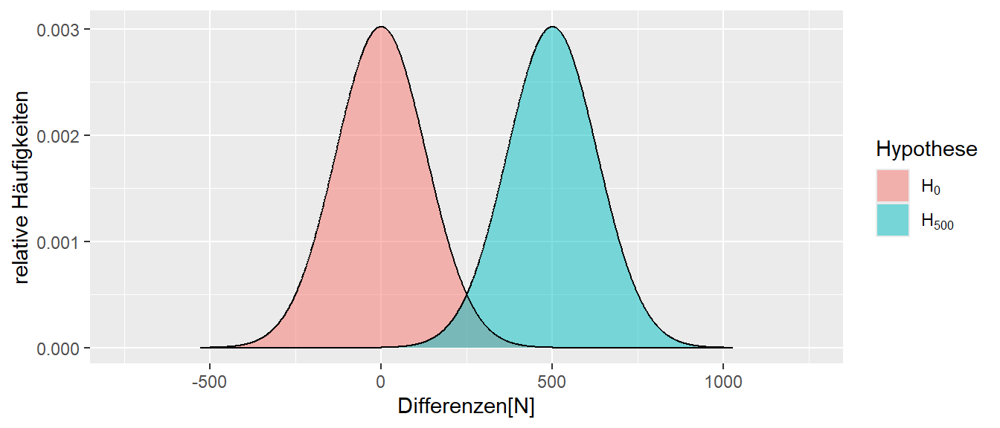
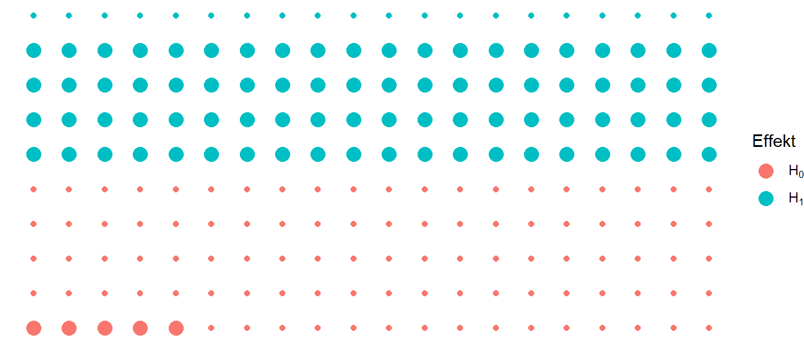
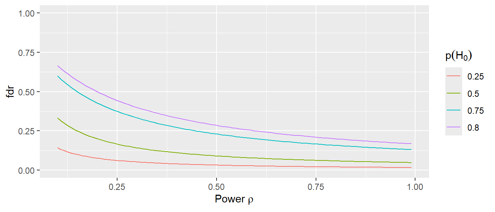

9 Statistische Signifikanz, p-Wert und Power
Im vorherigen Kapitel haben wir gesehen, wie Unsicherheit ein zentrales Problem bei der Interpretation von Ergebnissen von Experimenten oder Daten im Allgemeinen ist. Im folgenden Abschnitt wollen wir einen Prozess aufbauen, der es uns ermöglicht, vor dem Hintergrund dieser Unsicherheit eine Entscheidung zu treffen.
9.1 Wie treffe ich eine Entscheidung?
In unserem kleinen Weltbeispiel waren wir in der komfortablen Position, dass wir genau wussten, was passiert bzw. welcher Prozess unseren beobachteten Datenpunkt erzeugt hat. Das heißt, wir kannten den datengenerierenden Prozess.
Definition 9.1 (Datengenerierender Prozess (DGP)) Der Prozess in der realen Welt, der die beobachteten Daten und damit die daraus folgende Statistik erzeugt, wird als datengenerierender Prozess bezeichnet.
Letztendlich zielt unsere Untersuchung, unser Experiment, darauf ab, Informationen über den DGP zu erhalten, weil diese Information uns erlaubt, Aussagen über die reale Welt zu treffen. Dabei muss allerdings beachtet werden, dass dieser Prozess in den allermeisten Fällen eine starke Vereinfachung des tatsächlichen Prozesses in der Realität darstellt. Meistens sind die Abläufe in der Realität zu komplex, um sie in ihrer Gänze abzubilden. Somit wird fast immer nur ein Modell verwendet.
Zurück zu unserem Problem: Wenn wir ein Experiment durchführen, haben wir normalerweise nur eine einzige beobachtete Statistik. In unserem bisherigen Beispiel also den berechneten Unterschied \(D\) in der Kraftfähigkeit nach der Intervention zwischen der Kontroll- und der Interventionsgruppe.
In Abbildung 9.1 ist der beobachtete Wert \(D = 50\) abgetragen. Wir wissen von vornherein, dass dieser Wert beeinflusst ist durch die zufällige Wahl der Stichprobe und die daran geknüpfte Streuung der Werte in der Population. Wie können wir nun überhaupt eine Aussage darüber treffen, ob das Krafttraining etwas bringt, nur einen sehr kleinen Effekt zeigt oder möglicherweise sogar schädlich ist, also zu einer Abnahme der Kraft führt?
Überlegen wir uns zunächst, welche Prozesse unseren beobachteten Wert zustande gebracht haben könnten. Wir haben schon zwei Prozesse kennengelernt, einmal den Prozess mit \(\Delta = 100\) sowie den Prozess mit \(\Delta = 0\).

In Abbildung 9.2 ist wieder unser beobachteter Wert \(D = 50\) und die beiden Verteilungen abgetragen. Leider können wir nicht eindeutig sagen, welche der beiden Verteilungen bzw. deren zugrundeliegende Prozesse unseren beobachteten Wert erzeugt haben könnte, da unser beobachteter Wert \(D\) genau zwischen den beiden Maxima der Verteilungen liegt. Etwas motiviertes Starren auf die Abbildung wird uns allerdings auf die Idee bringen, dass der beobachtete Wert nicht nur von diesen beiden Verteilungen erzeugt worden sein muss, sondern durchaus noch mehr Verteilungen in Frage kommen.

Abbildung 9.3 zeigt, dass selbst die Verteilungen mit \(\Delta = -250N\) und \(\Delta = 350N\) nicht unplausibel sind, den beobachteten Wert erzeugt zu haben. Warum aber bei diesen fünf Verteilungen aufhören? Warum sollte \(\Delta\) nicht \(-50\) oder \(127\) sein? Und überhaupt, niemand kann behaupten, die Natur kenne nur ganzzahlige Werte (siehe \(\pi\)). Warum sollte \(D\) also nicht auch \(123.4567N\) sein?
Wenn diese Überlegung weitergeführt wird, dann wird schnell klar, dass letztendlich eine unendliche Anzahl von Verteilungen in der Lage ist, unseren beobachteten Wert plausibel zu generieren. Das bedeutet, wir haben ein Experiment durchgeführt, viel Aufwand betrieben und wochenlang mit unseren ProbandInnen Krafttraining durchgeführt, und sind hinterher eigentlich keinen Schritt weiter, da wir immer noch nicht wissen, was der datengenerierende Prozess ist. Also können wir selbst nach dem Experiment nicht sagen, ob unser Krafttraining tatsächlich wirksam ist.
Zum Glück werden wir später sehen, dass unser Unterfangen nicht ganz so aussichtslos ist. Schauen wir uns zum Beispiel die Verteilung für \(\Delta = -350N\) an (Abbildung 9.4).
Unser beobachteter Wert unter der Annahme, dass \(\Delta = -350N\) ist, ist nicht vollkommen unmöglich, aber so richtig wahrscheinlich erscheint er auch nicht. Der Wert liegt relativ weit am Rand der Verteilung. Die Kurve ist dort schon ziemlich nahe bei Null. Das bedeutet, der beobachtete Wert ist zwar durchaus möglich, aber es wäre schon überraschend, wenn wir bei einer Durchführung des Experiments ausgerechnet so einen Wert beobachten würden, wenn unser angenommenes \(\Delta\) korrekt ist.
Wenn wir jetzt dagegen von der Annahme ausgehen, dass dem DGP der Wert \(\Delta = 50N\) zugrunde liegen würde, hätten wir die Verteilung in Abbildung 9.5. Zunächst ist dieser Wert unter der Annahme möglich. Zusätzlich liegt der beobachtete Wert mitten in dem Teil der Verteilung, der auch zu erwarten wäre. Das bedeutet, der beobachtete Wert ist durchaus plausibel unter der Annahme, und bei der einmaligen Durchführung des Experiments würde uns der beobachtete Wert nicht unbedingt überraschen.

Diesen Ansatz können wir verwenden, um mithilfe unseres Experiments doch etwas über den DGP auszusagen. Allerdings müssen wir uns noch einmal eingehender mit Verteilungen auseinandersetzen, um z. B. genauer zu bestimmen, welche Ergebnisse uns überraschen würden. Das bedeutet, wir müssen uns erst einmal ein paar neue Konzepte erarbeiten.
9.2 Lage- und Skalenparameter
In Abbildung 9.3 hatten wir mehrere Verteilungen abgebildet. Die Verteilungen haben die gleiche Form, sind aber gegeneinander verschoben. Das bedeutet, sie unterscheiden sich bezüglich ihrer Position bzw. Lage. Der Parameter, der bei einer Verteilung die Lage steuert, ist der sogenannte Erwartungswert \(\mu\), der auch als Mittelwert bezeichnet wird. Dieser Mittelwert \(\mu\) unterscheidet sich allerdings von dem uns bereits bekannten Mittelwert \(\bar{x}\) in der Stichprobe. In einem späteren Abschnitt werden wir uns genauer anschauen, wie der Mittelwert \(\mu\) berechnet wird.
9.2.1 Mittelwert \(\mu\) der Population
Da der Mittelwert \(\mu\) die Position der Verteilung bestimmt, ist \(\mu\) ein Parameter der Verteilung. Die Beschreibung als Parameter der Verteilung bedeutet somit, dass die Verteilung von \(\mu\) abhängt, oder formaler, dass die Verteilung eine Funktion von \(\mu\) ist. Wenn wir uns an Funktionen aus der Schule erinnern, wo wir Funktionen \(f\) von \(x\) kennengelernt haben und als \(f(x)\) dargestellt haben, könnte dies auf die Verteilung übertragen mittels \(f(\mu)\) dargestellt werden.
Betrachten wir zwei Verteilungen, die sich bezüglich ihrer Mittelwerte \(\mu\) unterscheiden. Zum Beispiel sei \(\mu_1 = 0\) und \(\mu_2 = 3\). Wie in Abbildung 9.6 zu sehen ist, führt dies dazu, dass die beiden Verteilungen gegeneinander verschoben sind.
Wie bereits erwähnt, wird der Mittelwert \(\mu\) der Verteilung auch als Erwartungswert bezeichnet. Dies kann dahingehend interpretiert werden, dass, wenn Stichproben aus dieser Verteilung gezogen werden, im Mittel der Wert \(\mu\) erwartet werden kann. Soweit ist dies eigentlich noch nichts wirklich Neues, sondern wir hatten dies schon vorher gesehen, als wir alle möglichen Unterschiede zwischen der Kontrollgruppe und der Interventionsgruppe ermittelt haben. Hier war der Mittelwert der Verteilung genau derjenige Wert von \(\Delta\).
An dieser Stelle noch einmal der Unterschied zwischen \(\mu\) und \(\bar{x}\). Der Mittelwert \(\mu\) ist eine Eigenschaft der Population, also letztendlich ein Wert, den wir niemals kennen werden, ohne die gesamte Population zu untersuchen. Der Mittelwert \(\bar{x}\) ist eine Eigenschaft der Stichprobe aus der Population, also der konkrete Wert, den wir anhand der Stichprobe berechnen. In vielen Fällen versuchen wir, über \(\bar{x}\) einen Rückschluss auf \(\mu\) zu ziehen.
9.2.2 Standardabweichung \(\sigma\) der Population
Als zweite Eigenschaft von Verteilungen schauen wir uns jetzt die Streuung in der Population an. Die Streuung in der Population wird als Varianz bezeichnet und mit dem Symbol \(\sigma^2\) dargestellt. Schauen wir uns zunächst an, welchen Einfluss \(\sigma^2\) auf die Form der Verteilung hat. In Abbildung 9.7 sind wieder zwei Verteilungen abgetragen. Dieses Mal ist \(\mu\) in beiden Fällen gleich, aber die Varianzen \(\sigma^2\) sind mit \(\sigma_1^2 = 2\) und \(\sigma_2^2 = 1\) unterschiedlich.

In Abbildung 9.7 ist zu sehen, dass beide Verteilungen ihren Mittelpunkt an der gleichen Stelle haben, aber die rote Verteilung mit \(\sigma_1^2=2\) breiter ist als die andere Verteilung. Dies bedeutet, dass die Werte in der Verteilung stärker um den Mittelwert streuen. Wenn wir Werte aus der türkisen Verteilung ziehen, dann sollten diese näher um den Mittelwert \(\mu = 0\) liegen als bei der roten Verteilung.
Die Varianz \(\sigma^2\) ist ebenfalls wie der Mittelwert ein Parameter der Verteilung. Sie bestimmt die Form der Verteilung. Das heißt, wenn wir wieder unsere Schreibweise von eben verwenden und die Funktion \(f\), die die Verteilung beschreibt, betrachten, dann gilt \(f(\sigma^2)\) oder eben zusammen mit dem Mittelwert \(\mu\): \(f(\mu, \sigma^2)\).
Wenn aus der Varianz \(\sigma^2\) die Wurzel gezogen wird, dann wird der resultierende Wert \(\sigma\) als Standardabweichung bezeichnet. Da die Varianz \(\sigma^2\) nur positive Werte annehmen kann, ist die Wurzelfunktion bzw. deren Umkehrung, die Quadrierung, eineindeutig. Wenn wir die Standardabweichung kennen, kennen wir auch die Varianz und umgekehrt.
In der Stichprobe wird die Standardabweichung meistens mit dem Zeichen \(s\) bezeichnet und mittels der folgenden Formel berechnet:
\[\begin{equation} s = \sqrt{\frac{\sum_{i=1}^n (x_i - \bar{x})^2}{n-1}} \label{eq-std} \end{equation}\]
Das bedeutet, die Standardabweichung ist die mittlere quadrierte Abweichung vom Mittelwert (siehe Formel \(\eqref{eq-std}\)). Die Standardabweichung wird verwendet, um die Streuung der Daten zu beschreiben. Der Vorteil der Standardabweichung besteht darin, dass sie dieselbe Einheit wie der Mittelwert hat. Da die Abweichungen quadriert werden und somit quadrierte Einheiten besitzen, hat die Standardabweichung \(s\) dieselbe Einheit wie der Mittelwert \(\bar{x}\). Da die Varianz die quadrierte Standardabweichung ist, hat die Varianz der Stichprobe \(s^2\) daher quadrierte Einheiten.
Erinnern wir uns an unser erstes Beispiel aus der kleinen Welt, in dem wir in der Kontrollgruppe die Personen \(i = \{3,8,9\}\) gezogen hatten. Für diese Stichprobe berechnen wir die Standardabweichung und erhalten bei einem Mittelwert von \(\bar{x} = 2198\):
\[\begin{equation*} s = \sqrt{\frac{(2178-2198)^2+(2117-2198)^2+(2298-2198)^2}{2}} = 92 \end{equation*}\]
Wir erhalten einen Wert von $s = 92N. Wenn dieser Wert größer wird, dann streuen die Werte entsprechend weiter um den Mittelwert, und die Streuung verringert sich, wenn die Standardabweichung \(s\) abnimmt.
9.2.3 Mittelwert und Standardabweichung in R
Um den Mittelwert und die Standardabweichung bzw. die Varianz zu berechnen, gibt es in R entsprechende Funktionen mit den Namen mean(), sd() und var().
x <- c(1,2,3,4,5)
mean(x)[1] 3sd(x)[1] 1.581139var(x)[1] 2.59.3 Entscheidungen und \(\mu\) und \(\sigma\)
Zeichnen wir in eine Verteilung die Standardabweichung ein, ergibt sich folgendes Bild (siehe Abbildung 9.8).

Ein Großteil der Werte liegt im Bereich \(\mu \pm 1\times\sigma\). Der Bereich \(\mu \pm 2\times\sigma\) umfasst fast alle Werte, während der Bereich \(\mu \pm 3\times\sigma\) nahezu alle Werte beinhaltet. Wenn wir die Verteilung noch weiter nach links und rechts abtragen würden, könnten wir sehen, dass auch Werte jenseits von \(\mu \pm 3\times\sigma\) liegen, jedoch nur sehr wenige. Diese Erkenntnis können wir verwenden, um umgekehrt zu denken: Wenn wir annehmen, dass unsere Statistik dieser Verteilung folgt, welche Werte würden uns überraschen? Welche Werte würden wir als Evidenz sehen, um zu folgern: Ich glaube nicht, dass die beobachtete Statistik aus der angenommenen Verteilung stammt?
Ein Beispiel: Wenn der Wert mehr als \(3\times\sigma\) vom Mittelwert \(\mu\) entfernt ist, wäre es zwar nicht unmöglich, aber ziemlich unwahrscheinlich, einen solchen Wert zu beobachten. Ein weniger strenger Kompromiss wäre, einen Wert, der mehr als \(2\times\sigma\) von \(\mu\) entfernt liegt, bereits als überraschend zu betrachten. Tatsächlich liegt die Wahrscheinlichkeit, einen Wert jenseits von \(2\times\sigma\) zu beobachten, bei etwa 5 %. Das heißt, wir könnten einen Entscheidungsprozess aufstellen, bei dem wir sagen: Wenn wir für unsere Statistik eine bestimmte Verteilung annehmen und bei unserer Stichprobe einen Wert beobachten, der weiter als \(2\times\sigma\) von \(\mu\) entfernt ist, dann sind wir überrascht und sehen dies als Evidenz gegen die Verteilungsannahme.
Zusammengefasst:
- Setze eine Verteilung der Statistik mit definierten \(\mu\) und \(\sigma\) als Annahme an.
- Ziehe eine Zufallsstichprobe.
- Berechne die Statistik auf der Stichprobe.
- Überprüfe, wie viele Standardabweichungen \(\sigma\) die Statistik von \(\mu\) entfernt liegt.
9.3.1 Detour - Schätzer
Schauen wir uns noch einmal den Mittelwert \(\mu\) der Population und den Mittelwert \(\bar{x}\) der Stichprobe und deren Zusammenhang an. Der Mittelwert \(\bar{x}\) der Stichprobe wird als sogenannter Schätzer verwendet. Diesen Begriff werden wir später noch genauer untersuchen. Im Moment reicht es, sich zu merken, dass ein Schätzer eine Statistik ist, mit der wir einen Parameter der Population, z. B. \(\mu\), abschätzen wollen. Wie schon mehrmals erwähnt, werden wir den wahren Wert \(\mu\) aus der Population mittels unserer Stichprobe niemals zu 100% korrekt bestimmen können. Wir können aber mittels geschickt gewählter Statistiken Schätzer konstruieren, die bestimmte Eigenschaften haben.
Nehmen wir zum Beispiel den Mittelwert \(\bar{x}\). In unserer kleinen Welt kennen wir den Mittelwert \(\mu\) unserer Population. Der Wert beträgt \(\mu = 2291.3\). Schauen wir uns einmal an, was passiert, wenn wir alle möglichen Stichproben der Größe \(N = 10\) unserer kleinen Welt bestimmen und die Verteilung der Mittelwerte abtragen (siehe Abbildung 9.9).

In Abbildung 9.9 sehen wir, dass im Mittel der Stichprobenmittelwert \(\bar{x}\) tatsächlich um den wahren Populationsmittelwert \(\mu\) herum zentriert ist. Einzelne Ausgänge des Experiments können zwar daneben liegen, der Großteil der Experimente gruppiert sich jedoch um \(\mu\) herum. Der Stichprobenmittelwert \(\bar{x}\) ist daher eine gute Statistik, um den tatsächlichen Populationsmittelwert \(\mu\) abzuschätzen.
9.4 Welche Verteilung setzen wir an?
Kommen wir aber wieder zurück zu unserem Ausgangsproblem, dass wir anhand unserer beobachteten Stichprobe etwas über die Effektivität der Kraftintervention aussagen wollen. Wie hilft uns jetzt die Kenntnis von Mittelwert \(\mu\) oder \(\bar{x}\) und der Standardabweichung \(\sigma\) bzw. \(s\) weiter? Wenn die Verteilung unserer Statistik der Form folgt, wie wir sie bisher mehrmals beobachtet haben, dann können wir davon ausgehen, dass wir Werte eher in der Nähe des Mittelpunkts erwarten würden. Wir werden selten genau den Mittelpunkt beobachten, aber wir würden schon sehr überrascht sein, wenn wir Werte weit entfernt vom Mittelwert beobachten würden. Ab welcher Entfernung diese Werte als überraschend eingestuft werden, hängt dabei von der Streuung der Verteilung ab. Wenn \(\sigma\) groß ist, überraschen uns weit entfernte Werte weniger als wenn \(\sigma\) klein ist.
Spielen wir verschiedene Möglichkeiten einmal durch. Wir vernachlässigen zunächst einmal \(\sigma\) und konzentrieren uns auf \(\mu\). Wir benötigen eine einzelne Referenzverteilung, um unseren beobachteten Wert \(\Delta\), den Unterschied zwischen den beiden Gruppen, mit der Verteilung in Beziehung zu setzen. Wir könnten zum Beispiel sagen, dass wir davon ausgehen, dass der Unterschied zwischen den beiden Gruppen \(\Delta_{\text{wahr}} = 75N\) ist. Das heißt, dies wäre der wahre Unterschied zwischen den beiden Gruppen. Wir treffen ihn nicht genau, da wir eine Zufallsstichprobe gezogen haben und die Stichprobenvariabilität dazu führt, dass wir nicht genau den Unterschied treffen. Allerdings wird etwas Nachdenken über den Wert \(75N\) zu der Einsicht führen, dass \(75\) vollkommen willkürlich ist. Warum nicht \(85N\) oder \(25N\), oder warum überhaupt ganzzahlig? Schließlich ist \(\pi\) auch keine ganze Zahl, also könnten wir genauso gut \(74.1234N\) nehmen. Schnell wird daher klar, dass keine Zahl so richtig gut begründet werden kann. Wir brauchen aber eine Zahl, um unseren Apparat mit Verteilungen ansetzen zu können. Tatsächlich gibt es eine Zahl, die zwar auch willkürlich ist, aber doch etwas besser begründet werden kann, nämlich die Zahl \(\Delta_{\text{wahr}} = 0\). Warum ist der Wert \(0\) in diesem Fall speziell? Nun, er bedeutet, dass wir davon ausgehen, dass zwischen den beiden Gruppen kein Unterschied besteht, also die Intervention überhaupt nichts gebracht hat. Dies ist zwar keine wirklich interessante Annahme, aber sie hat trotz ihrer Willkürlichkeit doch etwas mehr Gewicht als eine beliebige andere Zahl. Wir bezeichnen diese Annahme jetzt auch als die \(H_0\)-Hypothese. Die \(0\) bei \(H\) bedeutet dabei nicht unbedingt, dass die \(H_0\) davon ausgeht, dass nichts passiert, sondern nur, dass dies unsere Ausgangsannahme ist. In vielen Fällen hat die \(H_0\) tatsächlich auch die Annahme, dass nichts passiert, dies muss aber nicht immer der Fall sein. Daher ist unsere Referenzverteilung für die Stichproben in unserem Fall die Hypothese (siehe Formel \(\eqref{eq-stats-sig-H0}\)):
\[\begin{equation} H_0: \Delta = 0 \label{eq-stats-sig-H0} \end{equation}\]
oder graphisch (siehe Abbildung 9.11)

Diese Referenzverteilung können wir nun verwenden, um eine Entscheidung bezüglich unseres beobachteten Werts zu treffen. Die Streuung in der Referenz- bzw. Stichprobenverteilung wird als Standardfehler bezeichnet, im Gegensatz zur Streuung in der Population \(\sigma\) und in der Stichprobe \(s\). Letztendlich ist der Standardfehler \(s_e\) nichts anderes als die Standardabweichung der Statistik.
Definition 9.2 (Standardfehler ) Die theoretische Streuung einer berechneten Statistik, also deren Standardabweichung, wird als Standardfehler bezeichnet und mit dem Symbol \(\sigma_e\) gekennzeichnet. Wird dieser Wert anhand der Stichprobe abgeschätzt, dann hat der Standardfehler das Symbol \(s_e\).
9.5 Statistisch signifikanter Wert
Kommen wir nun zu dem wichtigen Konzept des statistisch signifikanten Werts. Im vorhergehenden Abschnitt haben wir eine Stichprobenverteilung für unsere Statistik, den Unterschied zwischen den Mittelwerten der beiden Gruppen, hergeleitet. Wir gehen von der Verteilung aus, bei der es keinen Unterschied \(H_0: \Delta = 0\) zwischen den beiden Gruppen gibt. \(\Delta=0\) hat somit die Bedeutung, dass das Krafttraining nicht effektiv war. Dazu haben wir als Kriterium hergeleitet, dass wir Werte, die mehr als \(2\) Standardabweichungen vom Mittelwert entfernt sind, als unwahrscheinlich ansehen, da diese Werte etwa eine Wahrscheinlichkeit von \(5\%\) haben. Präziser: Werte, die mehr als zwei Standardfehler vom Mittelwertsunterschied \(\Delta = 0\) entfernt sind. Da der angenommene Mittelwertsunterschied, die gemessene Statistik, mit \(\Delta = 0\) zu \(\mu = 0\) wird, bedeutet dies, dass
wir Werte, die entweder kleiner als \(-2\times\) Standardfehler oder größer als \(2\times\) Standardfehler sind, als unwahrscheinlich unter der Annahme von \(H_0: \mu = 0\) betrachten. Als Entscheidungsregel folgt somit:
\[ |\text{beobachteter Wert }| > 2\times \sigma_e \Rightarrow \text{ Evidenz gegen } H_0 \]
flowchart TD
A[Statistik T] --> B{Entscheidung: T > 2xs_e}
B --> D(Nein)
D --> E[H0 beibehalten]
B --> F(Ja)
F --> G[H0 ablehnen]
In Abbildung 9.13 ist die Entscheidungsregel noch einmal graphisch dargestellt. Wir bestimmen eine Stichprobenverteilung unter der \(H_0\), beispielsweise \(H_0: \mu = \Delta = 0\) und schneiden nun rechts und links jeweils einen Bereich der Verteilung ab, den wir als unwahrscheinlich unter dieser speziellen \(H_0\) ansehen. Diesen Bereich bezeichnen wir als kritischen Bereich. Wenn unser beobachteter Wert im kritischen Bereich liegt, dann sehen wir diese Beobachtung als Evidenz gegen die Korrektheit der Annahme, dass die \(H_0\) gilt.

Wenn der Stichprobenwert der Statistik in der kritischen Region auftritt, dann wird von einem statistisch signifikanten Effekt gesprochen: Unter der \(H_0\) bin ich überrascht, diesen Wert zu sehen! Allerdings ist dieser Wert nicht unmöglich, sondern lediglich unwahrscheinlich, wenn die Annahme \(H_0\) korrekt ist. Unwahrscheinlich ist dabei kein absolutes Maß, sondern nur eine willkürliche Festsetzung, die wir selbst getroffen haben.
Wir hatten vorhin gesagt, dass Werte jenseits von \(2\times \sigma_e\) etwa eine Wahrscheinlichkeit von \(5\%\) unter der \(H_0\) haben. Dies bedeutet, dass die Wahrscheinlichkeit, Werte im kritischen Bereich zu beobachten, bei etwa \(5\%\) liegt, wenn die \(H_0\) zutrifft. Oder anders: Wenn die \(H_0\) in der Realität zutrifft, also den DGP korrekt beschreibt, und ich das Experiment \(100\)-mal wiederhole, dann würde ich etwa \(5\) Experimente erwarten, bei denen der beobachtete Wert im kritischen Bereich liegt. Anhand unserer Entscheidungsregel entscheide ich mich in diesen \(5\) Fällen gegen die \(H_0\), obwohl diese zutrifft. Das heißt, in diesen \(5\) Fällen würde ich mich irren. Daher wird die Wahrscheinlichkeit, die ich benutze, um einen kritischen Bereich auszuweisen, als Irrtumswahrscheinlichkeit bezeichnet. Da die Irrtumswahrscheinlichkeit ein zentrales Konzept in der Statistik ist, erhält sie das Symbol \(\alpha\).
Definition 9.3 (Irrtumswahrscheinlichkeit \(\alpha\) ) Die Wahrscheinlichkeit, mit der fälschlicherweise eine korrekte \(H_0\)-Hypothese abgelehnt wird, wird als Irrtumswahrscheinlichkeit bezeichnet. Die Irrtumswahrscheinlichkeit wird mit dem Symbol \(\alpha\) bezeichnet und auch als Fehler I. Art bezeichnet.
Eines der grundlegenden Probleme, das oftmals nicht beachtet wird bei der Interpretation von statistisch signifikanten Ergebnissen, bezieht sich darauf, dass ich nicht weiß, welches der \(100\) Experimente ich gerade durchgeführt habe. Es ist durchaus möglich, dass ich Pech gehabt habe und ausgerechnet mein Experiment eines der fünf Experimente ist.
Eine weitere Missinterpretation der Irrtumswahrscheinlichkeit ist, dass sie eine Aussage über die Wahrscheinlichkeit des Zutreffens der \(H_0\) erlaubt. Die Irrtumswahrscheinlichkeit ermöglicht dies allerdings nicht. Ob die \(H_0\) zutrifft, hat die Wahrscheinlichkeit entweder \(P(H_0) = 1\) oder \(P(H_0) = 0\). Entweder sie trifft zu oder eben nicht. Darüber wird hier keine Aussage gemacht, sondern nur, ob unter der Annahme, dass \(H_0\) zutrifft, der beobachtete Wert in einem wahrscheinlichen oder einem unwahrscheinlichen Bereich liegt. Nochmal, was wahrscheinlich ist, wurde durch eine willkürliche Festlegung bestimmt. Die gewählte Grenze ist keine physikalische Realität!
Kommen wir nun zum nächsten oft missverstandenen Term, dem p-Wert.
9.6 Der p-Wert
Fangen wir dieses Mal mit der Definition an. Da wir mittlerweile hoffentlich schon einiges an Intuition aufgebaut haben, sollte die Definition einigermaßen verständlich sein.
Definition 9.4 (p-Wert ) Der p-Wert gibt die Wahrscheinlichkeit für den beobachteten oder einen noch extremeren Wert unter der \(H_0\) an.
In Abbildung 9.14 ist eine Verteilung unter der \(H_0\) eingezeichnet, zusammen mit den kritischen Bereichen für ein gegebenes \(\alpha\) und dem beobachteten Wert.

Der p-Wert ist die Wahrscheinlichkeit (gelbe Fläche), unter der \(H_0\), für den beobachteten oder einen extremeren Wert. Ein extremerer Wert bedeutet in diesem Fall einen größeren Wert, also alle Werte rechts vom beobachteten Wert. Jetzt irritiert allerdings, dass wir auf der linken Seite ebenfalls eine gelbe Fläche haben. Was hier passiert, ist, dass der beobachtete Wert an \(\mu\) in den anderen kritischen Bereich gespiegelt (salopp) wurde. Jetzt wird wieder das gleiche Prinzip mit dem extremeren Wert angewendet. Hier bedeutet “extremer” links vom beobachteten Wert. Wir erhalten dann wieder eine Fläche und somit eine Wahrscheinlichkeit. Die beiden gelben Flächen zusammen ergeben dann den p-Wert. Dass die Wahrscheinlichkeit für eine Seite dazugenommen wird, bei der wir gar keinen Wert beobachtet haben, wird später verständlich, wenn wir den Unterschied zwischen gerichteten und ungerichteten Hypothesen uns anschauen. Zur Begrifflichkeit “extrem” können wir aber schon mal zusammenfassen, dass “extrem” immer in Bezug auf das \(\mu\) der Stichprobenverteilung zu verstehen ist.
In Abbildung 9.15 sind verschiedene Beispiele für beobachtete Werte und die dazugehörigen p-Werte und deren Flächen abgebildet.
Können wir eigentlich den p-Wert und die Irrtumswahrscheinlichkeit in irgendeiner Form zusammenbringen? Ja, wenn wir wissen, dass die beobachtete Statistik einen p-Wert von kleiner \(\alpha\) hat, dann haben wir automatisch ein statistisch signifikantes Ergebnis. Wenn das nicht auf Anhieb einleuchtet, dann schaut euch noch mal Abbildung 9.14 an. Welche Wahrscheinlichkeit hat \(\alpha\) (Tipp: Welche Flächen sind das?) und welche Wahrscheinlichkeit hat der p-Wert (Tipp: Gelb?).
Da der p-Wert eines der am meisten missverstandenen Konzepte ist, hier noch mal ein paar Statements und Erklärungen rund um den p-Wert von verschiedenen Autoren und Institutionen.
“[A] p-value is the probability under a specified statistical model that a statistical summary of the data (e.g., the sample mean difference between two compared groups) would be equal to or more extreme than its observed value.” (Wasserstein und Lazar 2016, p.131)
“[T]he P value is the probability of seeing data that are as weird or more weird than those that were actually observed.” (Christensen 2018, p.38)
9.6.1 Signifikanter Wert - Das Kleingedruckte
- Vor dem Experiment wird für ein \(H_0\) ein \(\alpha\)-Level angesetzt (per Konvention \(\alpha=0,05 = 5\%\)).
- Anhand des \(\alpha\)-Levels können kritische Werte (\(k_{lower}, k_{upper}\)) bestimmt werden. Diese bestimmen die Grenzen der kritischen Regionen.
- Wenn der gemessene Wert \(w\) der Statistik in die kritische Region fällt, also \(w \leq k_{lower}\) oder \(w \geq k_{upper}\) gilt, dann wird von einem statistisch signifikanten Wert gesprochen und die dazugehörige Hypothese wird abgelehnt. Äquivalent: Der p-Wert ist kleiner als \(\alpha\).
- Da in \(\alpha\)-Fällen ein Wert in der kritischen Region auftritt, auch wenn die \(H_0\) zutrifft, wird in \(\alpha\)-Fällen ein \(\alpha\)-Fehler gemacht.
- Wenn der Wert \(w\) der Statistik nicht in den kritischen Regionen liegt, oder gleichwertig der p-Wert größer als \(\alpha\) ist, wird die \(H_0\) beibehalten. D.h. nicht, dass kein Effekt vorliegt, sondern lediglich, dass anhand der Daten keine Evidenz diesbezüglich gefunden werden konnte!
- Die statistische Signifikanz sagt nichts über die Wahrscheinlichkeit der Theorie aus!
- Ein p-Wert von \(p = 0.0001\) heißt nicht, dass mit 99,99% Wahrscheinlichkeit ein Effekt vorliegt!
- Statistisch signifikant heißt nicht automatisch praktisch relevant!
Und noch ein paar weitere Erklärungen für den p-Wert nach Wasserstein und Lazar (2016):
- P-values can indicate how incompatible the data are with a specified statistical model.
- P-values do not measure the probability that the studied hypothesis is true, or the probability that the data were produced by random chance alone.
- Scientific conclusions and business or policy decisions should not be based only on whether a p-value passes a specific threshold.
- Proper inference requires full reporting and transparency.
- A p-value, or statistical significance, does not measure the size of an effect or the importance of a result.
- By itself, a p-value does not provide a good measure of evidence regarding a model or hypothesis.
In Abbildung 9.16 ist ein kurzer Abschnitt aus Altman und Bland (1995) abgebildet, der noch mal auf eine weitere Missinterpretation eines statistisch signifikanten Ergebnisses eingeht, also wenn der p-Wert \(<\alpha\) gilt.

Kurz gesagt, wenn wir kein statistisch signifikantes Ergebnis gefunden haben, bedeutet dies nicht, dass es keinen Unterschied gibt. Tatsächlich wird der beobachtete Wert der Statistik praktisch nie exakt \(=0\) sein, und wir werden daher praktisch immer einen Unterschied finden. Allerdings ist der beobachtete Unterschied nicht überraschend unter der \(H_0\) aufgrund der Stichprobenvariabilität. Dennoch gilt: Die Abwesenheit von Evidenz ist nicht gleichzusetzen mit der Evidenz für Abwesenheit.
Das gibt uns auch einen schönen Aufschlag für die nächste Etappe. Was passiert eigentlich, wenn die andere Hypothese, also nicht die \(H_0\), zutrifft?
9.7 Was passiert wenn eine “andere” Hypothese zutrifft?
In Abbildung 9.17 ist neben der uns schon bekannten Stichprobenverteilung unter der \(H_0\) für unsere kleine Welt eine weitere Verteilung unter einer Alternativhypothese, die wir mit \(H_1\) bezeichnen. Unter der \(H_1\) ist der wahre Unterschied zwischen den beiden Verteilungen \(\Delta = 500N\).

In Abbildung 9.17 ist zu sehen, dass sich die beiden Verteilungen überschneiden. Der kritische Bereich unter der \(H_0\) fängt etwa bei \(500N\) an, sodass der Bereich zwischen etwa \(100-400N\) unter beiden Verteilungen wohl relativ wahrscheinlich ist. Das heißt, wenn wir einen Wert in diesem Bereich beobachten würden, könnten wir nicht wirklich trennscharf argumentieren, aus welcher Stichprobenverteilung der Wert tatsächlich stammt. In Abbildung 9.18 haben wir den Bereich unter der \(H_1\), der links des kritischen Bereichs von \(H_0\) liegt, grün eingefärbt. Da es sich hier wieder um eine Fläche handelt, bestimmt diese Fläche eine Wahrscheinlichkeit. Wie könnte diese Wahrscheinlichkeit verbal beschrieben werden?
Die Werte zwischen den beiden kritischen Bereichen beschreiben diejenigen Werte, bei denen wir die \(H_0\) beibehalten würden, da wir diese Werte nicht als überraschend unter der \(H_0\) einschätzen. Dementsprechend würden wir uns irren, wenn in der Realität allerdings die \(H_1\)-Hypothese zutreffen würde. Daher beschreibt die grüne Fläche in Abbildung 9.18 ebenfalls die Wahrscheinlichkeit, sich zu irren – aber dieses Mal, wenn die Alternativhypothese \(H_1\) zutrifft. Diese Irrtumswahrscheinlichkeit bezeichnet man als \(\beta\)-Wahrscheinlichkeit.
Definition 9.5 (\(\beta\)-Wahrscheinlichkeit) Die \(\beta\)-Wahrscheinlichkeit beschreibt die Wahrscheinlichkeit, sich gegen die Alternativhypothese \(H_1\) zu entscheiden, wenn diese zutrifft. Die \(\beta\)-Wahrscheinlichkeit wird auch als Fehler II. Art bezeichnet.
Wenn wir jetzt das Komplement der grünen Fläche nehmen, dann erhalten wir wiederum eine Wahrscheinlichkeit. In Abbildung 9.19 ist diese Fläche blau eingezeichnet.

Diese Fläche beschreibt die Wahrscheinlichkeit, sich für die Alternativhypothese \(H_1\) zu entscheiden, wenn diese auch tatsächlich zutrifft, und wird als die Power bezeichnet.
Definition 9.6 (Power ) Die Power bezeichnet die Wahrscheinlichkeit, sich für die Alternativhypothese \(H_1\) zu entscheiden, wenn diese in der Realität zutrifft.
Nochmal zu Abbildung 9.19: Die Werte unter der blauen Fläche werden mit einer Wahrscheinlichkeit beobachtet, die derjenigen der blauen Fläche entspricht. Jedes Mal, wenn so ein Wert eintritt, liegt dieser im kritischen Bereich unter der \(H_0\) (rote Fläche) und wir entscheiden uns gegen die \(H_0\).
Zusammengefasst haben wir die folgende Liste bezüglich der Terme \(\alpha\), \(\beta\) und Power: - \(\alpha\): Die Wahrscheinlichkeit, sich gegen die \(H_0\) zu entscheiden, wenn die \(H_0\) zutrifft. Das \(\alpha\)-Level wird vor dem Experiment festgelegt, um zu kontrollieren, welche Fehlerrate toleriert wird. - \(\beta\): Die Wahrscheinlichkeit, sich gegen die \(H_1\) zu entscheiden, wenn die \(H_1\) zutrifft. - Power := \(1 - \beta\): Die Wahrscheinlichkeit, sich für die \(H_1\) zu entscheiden, wenn die \(H_1\) zutrifft. Sollte ebenfalls vor dem Experiment festgelegt werden.
Die verschiedenen Entscheidungsmöglichkeiten haben wir schon einmal zusammengefasst (siehe Tabelle 9.1).
| Entscheidung\Realität | \(H_0\) | \(H_1\) |
|---|---|---|
| \(H_0\) | korrekt | \(\beta\) |
| \(H_1\) | \(\alpha\) | korrekt |
9.8 Wie kann die Power erhöht werden?
Die Frage, die sich nun stellt, ist: Wie kann wir die Power erhöht werden? In Abbildung 9.20 haben sind nochmals die beiden Verteilungen bei \(\Delta = 500\) und \(\Delta = 0\) abgetragen.
Eine Entscheidung ist speziell problematisch im Bereich zwischen \(0\) und \(500\). Hier überlappen die beiden Verteilungen, und es entstehen dementsprechend Schwierigkeiten, einen beobachteten Wert in diesem Bereich eindeutig einer der beiden Hypothesen zuzuordnen. Die Power kann daher erhöht werden, indem die Überlappung der beiden Verteilungen verkleinert wird. Dazu sind zwei Möglichkeiten vorhanden: Entweder der Unterschied zwischen den beiden \(\Delta\)s wird vergrößert (d.h., das Krafttraining müsste effizienter werden) oder die beiden Verteilungen werden schmaler gemacht, indem die Streuung der Werte verkleinert wird.
In Abbildung 9.21 sind alle Parameter gleich geblieben wie in Abbildung 9.20, aber die Stichprobengröße wurde von \(n = 3\) auf \(n = 9\) erhöht.

Es ist zu beobachten, dass die Position der Verteilungen gleich geblieben ist. Dies sollte nicht weiter verwundern, da immer noch die beiden Hypothesen \(H_0: \Delta = 0\)N und \(H_1: \Delta = 500\)N miteinander verglichen werden. Aber durch die Erhöhung der Stichprobengröße ist die Streuung der \(D\)s unter beiden Hypothesen kleiner geworden. Dies führt dazu, dass die Verteilungen nun steiler sind und dementsprechend weniger stark überlappen. Die Streuung der Statistik wird, wie schon oben erwähnt, als Standardfehler \(s_e\) bezeichnet und beschreibt die Standardabweichung der Statistik. Der Standardfehler ist nicht gleich der Standardabweichung in der Population bzw. der Stichprobe (siehe Abbildung 9.22).
Warum führt die Erhöhung der Stichprobengröße dazu, dass die Verteilungen steiler werden? Die Statistik die in diesen Fällen betrachtet wurde war der Unterschied \(d\) zwischen den Gruppen. Durch die Erhöhung der Stichprobe kommt es nun dazu, dass dieser Unterschied \(d\) weniger stark schwankt, denn dadurch, dass mehr Probandinnen betrachtet werden, ist die Chance das zwei extreme Mittelwerte in den beiden Gruppen auftachen kleiner. Die Vergrößerung der Stichprobe führt dazu, dass extreme Werte eher rausgemittelt werden. Dies führt dann dazu, dass wenn die Mittelwerte weniger schwanken auch die Unterschiede zwischen den beiden Mittelwerten weniger schwanken. In der Folge ist die Standardabweichung der Differenzen \(d\), der Standardfehler kleiner und die beiden Verteilungen unter der \(H_0\) und der \(H_1\) respektive werden steiler.
Hinweis
Für den Standardfehler des Mittelwerts, also wenn die Statistik der Mittlwert ist, dann gilt der folgende Zusammenhang:
| Population | Stichprobe |
|---|---|
| \(\sigma_{\bar{X}}=\sqrt{\frac{\sigma^2}{n}} = \frac{\sigma}{\sqrt{n}}\) | \(s_e=\sqrt{\frac{s^2}{n}}=\frac{s}{\sqrt{n}}\) |
In Tabelle 9.2 ist zu sehen, dass ein wurzelförmiger Zusammenhang zwischen dem Standardfehler \(s_e\) und der Stichprobengröße besteht. Dieser Zusammenhang wird uns in verschiedenen Berechnungen zum Standardfehler verschiedener Statistiken immer wieder begegnen.
Beispiel 9.1 (Standardfehler des Mittelwerts) Die Gleichheit des Standardfehler des Mittelwerts mit der Standardabweichung der Stichprobenverteilung der Mittelwerte ist im folgenden Beispiel einfach zu nachzuvollziehen. Dazu werden \(1000\) Stichproben der Größe \(N = 10\) aus einer Normalverteilung mit \(\mu = 0\) und \(sigma=2\) gezogen und für jede Stichprobe wird der Mittelwert berechnet. Der theoretische Standardfehler ist:
\[\begin{equation*} s_e = \frac{\sigma}{\sqrt{n}} = \frac{2}{\sqrt{10}} \approx 0.63 \end{equation*}\]
n_sim <- 1000
N <- 10
mu <- 0
sigma <- 2
x_bars <- replicate(n_sim, mean(rnorm(N, mean=mu, sd=sigma)))
sd(x_bars)[1] 0.6262897Es ist zu beobachten, dass der empirische Standardfehler, im Rahmen der Stichprobenvariabilität, den theoretischen Wert tatsächlich sehr gut approximiert. Bei mehr Simulationsdurchgängen wird entsprechend der Unterschied immer kleiner.

In Abbildung 9.23 ist zur Erinnerung aus der Schule die Funktion \(y = \sqrt{x}\) abgetragen. Daran sehen wir, dass die Funktionswerte für kleine Werte von \(x\) steil ansteigen und später dann anfangen, immer langsamer größer zu werden. Angewendet auf unsere Power-Frage: Wenn der Standardfehler mit der Wurzel der Stichprobengröße \(n\) kleiner wird, dann ist dies besonders bei kleinen Stichprobengrößen von Bedeutung, also zum Beispiel der Unterschied zwischen \(n = 10\) und \(n = 20\). Der gleiche Stichprobenunterschied dagegen zwischen \(n = 110\) und \(n = 120\) fällt nicht mehr ganz so stark ins Gewicht. Das heißt, bei kleinen Stichproben sollte um jede zusätzliche Teilnehmerin bzw. jeden zusätzlichen Teilnehmer gekämpft werden. Allgemein gilt: Je größer die Stichprobengröße, desto größer die Power.
9.9 (Exkurs) Power und false discovery rate
Der folgende Abschnitt betrachtet, wie sich die durchschnittliche Power auf die Literatur insgesamt auswirkt. Sei eine bestimmte Anzahl von Studien bzw. Veröffentlichungen gegeben. Ein Teil dieser Studien wird signifikante Ergebnisse dokumentieren, während der andere Teil keine signifikanten Ergebnisse gefunden hat. Innerhalb der signifikanten Ergebnisse wird ein Teil der Ergebnisse auf einem tatsächlichen Effekt beruhen, während der andere Teil zwar statistisch signifikant ist, aber eigentlich kein Effekt vorliegt – es wurde also ein Typ-I-Fehler begangen. Den Anteil der Studien, bei denen kein Effekt vorliegt, bezeichnen wir mit \(P(H_0)\). Allgemeiner formuliert, ist das die Wahrscheinlichkeit für eine Studie mit einem Nulleffekt. Wenn \(N\) die Gesamtzahl der betrachteten Studien bezeichnet, dann berechnet sich die Anzahl der Studien, bei denen ein Nulleffekt vorliegt, folgendermaßen:
\[\begin{equation*} N_{H_0} = P(H_0) \cdot N \end{equation*}\]
Werden diese Studien mit der Irrtumswahrscheinlichkeit \(\alpha\) multipliziert, dann erhält man die Anzahl der Studien, die zwar einen Nulleffekt, also eigentlich keinen Effekt haben, aber aufgrund der Irrtumswahrscheinlichkeit geirrt haben und einen statistisch signifikanten Effekt beobachten.
\[\begin{equation*} N_{H_0, \text{signifikant}} = P(H_0) \cdot \alpha \cdot N \end{equation*}\]
Ein einfaches Beispiel wäre, wenn \(N = 200\) Studien gegeben wären und \(P(H_0) = 0.5\), dann liegt bei \(100\) Studien kein Effekt vor. Aber aus diesen \(100\) Studien werden sich \(\alpha\) der Fälle irren. Dies führt dazu, dass daher \(5\) statistisch signifikante Ergebnisse beobachtet werden. In Abbildung 9.24 ist dies graphisch veranschaulicht.
Die gleichen Überlegungen können für diejenigen Studien gemacht werden, bei denen tatsächlich ein Effekt vorliegt. Die Anzahl der Studien mit einem Effekt ist genau das Komplement zu denjenigen, bei denen der Nulleffekt vorliegt. Formal:
\[\begin{equation*} N_{H_1} = (1-P(H_0))\cdot N \end{equation*}\]
Die Anzahl derjenigen Studien, bei denen ein Effekt vorliegt und die auch als statistisch signifikant beobachtet werden, ist abhängig von der Power \(\rho\). Dementsprechend berechnet sich die Anzahl der statistisch signifikanten Studien, bei denen auch ein Effekt vorliegt, folgendermaßen:
\[\begin{equation*} N_{H_1,\text{signifikant}} = (1-P(H_0))\cdot \rho \cdot N \end{equation*}\]
Im Beispiel mit \(N = 200\) Studien und \(P(H_0) = 0.5\) würde bei \(100\) Studien ein Effekt vorliegen und bei einer Power von \(\rho = 0.8\) würde bei \(80\) dieser Studien ein statistisch signifikantes Ergebnis beobachtet werden (siehe Abbildung 9.25).

Nun kann der Anteil aller Studien mit statistisch signifikanten Ergebnisse untersucht werden mit denjenigen bei denen zwar ein statisch signifikantes Ergebnis beobachtete wurde aber tatsächlich ein Nulleffekt zugrundeliegt ins Verhältnis zueinander gesetzt werden. Dies führt zu der sogenannten false discovery rate (fdr). Formal ist fdr wie folgt definiert (siehe Bartoš und Maier (2022)).
\[\begin{equation} \begin{aligned} \text{fdr} &= \frac{P(H_0)\cdot \alpha \cdot N}{P(H_0)\cdot \alpha \cdot N + (1-P(H_0))\cdot \rho \cdot N} \\ &=\frac{P(H_0)\cdot \alpha}{P(H_0)\cdot \alpha + (1-P(H_0))\cdot \rho} \end{aligned} \label{eq-stats-sig-fdr} \end{equation}\]
Die fdr bestimmt somit den Anteil der statistisch signifikanten Ergebnisse, bei denen es sich um einen falschen Befund handelt. Das heißt, der Anteil an Studien bei denen ein Effekt in Form eines statistisch signifikanten Ergebnisses beobachtet, obwohl eigentlich kein Effekt vorliegt. Es werden in ?fig-stats-sig-frd-02a die großen \(H_0\)-Punkte durch die Gesamtanzahl der großen Punkte, der signifikanten Punkte geteilt.

Die Formel \(\eqref{eq-stats-sig-fdr}\) für die fdr kann nun verwendet werden, um den Zusammenhang der false discovery rate mit der Power für eine gegebene Nulleffektswahrscheinlichkeit \(P(H_0)\) und und eine gegebene Irrtumswahrscheinlichkeit \(\alpha\) zu betrachten (siehe Abbildung 9.27).

In Abbildung 9.27 ist zu erkennen, dass die fdr besonders hoch ist, wenn die Power in der Literatur niedrig ist. Gleichzeitig steigt die fdr an, wenn die Wahrscheinlichkeit für keinen Effekt \(P(H_0)\) ansteigt. In Abbildung 9.27 ist dieser Effekt besonders groß, wenn die Grundrate der tatsächlichen Effekte \(1-P(H_0)\) niedrig ist bzw. eben \(P(H_0)\) sehr hoch ist. Wenn nur \(20\%\) der Studien tatsächlich Effekte zugrunde liegen, sind \(2/3\) der Ergebnisse falsch positiv. Daher, wenn die mittlere Power in der Literatur in einer wissenschaftlichen Disziplin durch vorwiegend kleine Studien niedrig ist, sinkt die Wahrscheinlichkeit, dass ein gegebenes statistisch signifikantes Ergebnis tatsächlich durch einen Effekt hervorgerufen wurde. Für eine Forschungsdisziplin ist es daher wichtig, dass die Studien über eine ausreichende Power verfügen, um einerseits die gewünschten Effekte tatsächlich beobachten zu können und andererseits die Literatur durch falsch-positive Ergebnisse nicht zu verfälschen (siehe Button u. a. (2013)). Bei dieser Betrachtung fließen Probleme wie p-hacking oder HARKing noch gar nicht mit ein.
9.10 Things to know
- Datengenerierender Prozess
- Lage- und Skalenparameter
- Mittelwert, Varianz und Standardabweichung
- Statistische Signifikanz
- Schätzer
- p-Wert
- Referenzverteilung
- \(H_0\) und \(H_1\)
- \(\alpha\)-Fehler
- \(\beta\)-Fehler
- Power
- Standardfehler
9.11 Weitere Literatur
Ein interessanter Artikel, der die Auswirkungen beleuchtet, wenn Studien zu wenig Power haben: Button u. a. (2013). In Djulbegovic und Hozo (2007) findet sich eine interessante Diskussion darüber, unter welchen Bedingungen statistisch signifikante Ergebnisse als wahr angesehen werden sollten. In Borg u. a. (2023) ist eine Untersuchung zu der unerwartet hohen Anzahl von statistisch signifikanten Ergebnissen in der sportwissenschaftlichen Literatur dokumentiert (siehe auch Haeffel (2022)). In Sandercock (2024) wird ein Beispiel dokumentiert, das zeigt, wie häufig der Standardfehler mit der Standardabweichung verwechselt wird (siehe auch Kadlec, Sainani, und Nimphius (2022)).